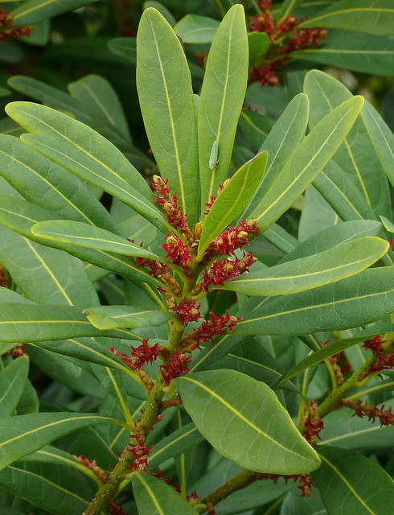

Myricaceae
Bayberry Family / Wax Myrtle Family
Myricaceae is a small family of shrubs and small trees belonging to the order Fagales within the Rosids clade (Fabids). Comprising 3-4 genera (Myrica, Morella, Comptonia, Canacomyrica) and about 50-60 species, the family has a nearly cosmopolitan distribution but is absent from Australasia. They are characterized by aromatic tissues with resin glands, often nitrogen-fixing root nodules, catkin inflorescences, highly reduced unisexual flowers lacking a perianth, and small drupe or nutlet fruits often coated in wax.
Overview
The Myricaceae family consists of about 50-60 species of aromatic shrubs and small trees. The generic classification varies, with some treatments recognizing a broad Myrica, while others split off Morella based on fruit and other characteristics. Comptonia (Sweetfern) and the New Caledonian endemic Canacomyrica are usually recognized as distinct.
These plants are found across a wide range of latitudes and habitats, from temperate zones to tropics, often thriving in nutrient-poor, acidic soils like bogs, heathlands, coastal dunes, and pine barrens. A key ecological feature is the ability of most species to form symbiotic relationships with nitrogen-fixing actinobacteria (Frankia) in root nodules, allowing them to colonize nitrogen-deficient soils.
Economically, the family is known for the waxy coating on the fruits of some species (especially Morella cerifera and M. pensylvanica), which is harvested to make bayberry candles and soaps. Some species have edible fruits, are used in traditional medicine, or provide habitat and food for wildlife.
Quick Facts
- Scientific Name: Myricaceae Rich. ex Kunth
- Common Name: Bayberry family, Wax Myrtle family
- Number of Genera: 3-4 (Myrica, Morella, Comptonia, Canacomyrica)
- Number of Species: Approximately 50-60
- Distribution: Nearly cosmopolitan, but absent from Australasia and most of Oceania.
- Evolutionary Group: Eudicots - Rosids - Fabids - Fagales
Key Characteristics
Growth Form and Habit
Deciduous or evergreen shrubs or small trees. Often aromatic due to microscopic resin glands (peltate glands) on leaves, stems, and fruits. Roots commonly bear nitrogen-fixing nodules containing Frankia bacteria.
Leaves
Leaves are alternate and simple, though often deeply lobed or pinnatifid in Comptonia peregrina (Sweetfern), appearing fern-like. Leaf margins are variable: entire, serrated, or lobed. Stipules are typically absent (except in Comptonia where they are present and semi-cordate).
Inflorescence
Flowers are borne in dense, cylindrical spikes called catkins (aments). Catkins are typically unisexual (staminate or pistillate), erect or pendant, simple or sometimes branched at the base.
Flowers
Flowers are unisexual (plants usually dioecious or monoecious), highly reduced, and lack a perianth (apetalous and asepalous), or possess only minute scales. Each flower is subtended by a single bract.
- Male Flowers: Consist typically of 2-8 (up to 20) stamens with short filaments. Anthers dehisce longitudinally. A pistillode is absent.
- Female Flowers: Consist of a single pistil composed of 2 fused carpels. Ovary is superior (though appearing inferior due to surrounding bracteoles in some views), unilocular, containing a single basal, orthotropous ovule. Styles are 2, typically short, with elongated, linear stigmas. The ovary is often subtended by 2-4 small bracteoles in addition to the main floral bract.
Fruits and Seeds
The fruit is a small, single-seeded drupe or nutlet. The surface is often covered with glandular papillae that secrete wax (forming a whitish or grayish coating when dry) or resin. The seed contains endosperm.
Chemical Characteristics
Characterized by aromatic resins and essential oils produced in peltate glands. Contain tannins and various phenolic compounds. Nitrogen-fixing symbiosis with Frankia is prevalent.
Field Identification
Identifying Myricaceae involves recognizing their shrubby/tree habit, aromatic foliage (often gland-dotted), catkin inflorescences, reduced flowers, and characteristic waxy or resinous fruits, often combined with their typical habitats (nutrient-poor soils).
Primary Identification Features
- Habit: Shrubs or small trees.
- Aroma: Leaves and twigs usually aromatic when crushed due to resin glands.
- Leaves: Alternate, simple (except pinnatifid in Comptonia), often gland-dotted.
- Inflorescence: Catkins (aments), dense spikes of unisexual flowers.
- Flowers: Highly reduced, lacking petals and sepals, unisexual.
- Fruit: Small drupe or nutlet, often coated with wax or resin glands.
- Ecology: Often on nutrient-poor soils, many species fix nitrogen.
Secondary Identification Features
- Sexuality: Plants usually dioecious or monoecious.
- Stamens (Male): Few (2-20) per flower.
- Styles (Female): 2, with linear stigmas.
- Root Nodules: Nitrogen-fixing nodules may be present (require excavation).
Seasonal Identification Tips
- Year-round: Habit, leaf arrangement, and aromatic properties are useful year-round. Persistent waxy fruits often remain through winter.
- Flowering Season: Catkins typically appear in spring, often before or with new leaves.
- Fruiting Season: Fruits mature in late summer or fall and often persist.
Common Confusion Points
- Betulaceae (Birch Family): Also in Fagales with catkins, but typically have doubly serrated leaves, winged nutlet fruits (birch, alder) or nuts enclosed in bracts (hazel, hornbeam), and lack the distinctive aromatic glands and waxy fruits of Myricaceae.
- Salicaceae (Willow Family): Also have catkins and often grow in moist habitats, but leaves are simple with stipules, flowers have nectar glands and often hairy bracts, and fruit is a capsule releasing cottony seeds.
- Anacardiaceae (Cashew Family): Some shrubs (like sumacs, Rhus) have alternate leaves and dense inflorescences, but flowers have distinct sepals/petals, superior ovaries (usually), and fruit is typically a drupe without a waxy coating. Often allergenic.
- Comptonia vs. Ferns: The deeply pinnatifid leaves of Comptonia peregrina resemble fern fronds, but it is a woody shrub with catkins and aromatic scent, unlike true ferns which reproduce by spores.
Field Guide Quick Reference
Look For:
- Aromatic shrubs/small trees
- Alternate, simple leaves (or pinnatifid in Comptonia)
- Gland-dotted leaves/stems
- Catkin inflorescences
- Reduced, unisexual flowers (no perianth)
- Small drupe/nutlet fruit
- Fruit often waxy or resin-dotted
- Nitrogen-fixing nodules likely
Key Variations:
- Leaf shape (simple vs. pinnatifid)
- Leaf margin (entire vs. serrated)
- Deciduous vs. evergreen habit
- Fruit wax abundance
- Catkin structure (simple vs. branched)
Notable Examples
Key genera and species in the Myricaceae family include:

Morella cerifera (syn. Myrica cerifera)
Wax Myrtle, Southern Bayberry
An evergreen shrub or small tree native to eastern and southeastern North America and the Caribbean. Known for its aromatic foliage and abundant small, bluish-white fruits heavily coated in wax, used for making traditional bayberry candles.

Myrica gale
Sweet Gale, Bog Myrtle
A deciduous shrub found in acidic bogs and wetlands across northern and western Europe, northern Asia, and North America. Highly aromatic leaves were historically used in brewing (gruit) and as an insect repellent.

Comptonia peregrina
Sweetfern
A deciduous shrub native to eastern North America, often found in dry, sandy, or rocky acidic soils. Unique within the family for its deeply pinnatifid, fern-like leaves. Highly aromatic when crushed. Possesses stipules.

Morella pensylvanica (syn. Myrica pensylvanica)
Northern Bayberry
A deciduous or semi-evergreen shrub native to eastern North America, often found in coastal areas and sandy soils. Similar to M. cerifera with waxy fruits used for candles, but generally more cold-hardy and deciduous.
Phylogeny and Classification
Myricaceae is placed in the order Fagales, which belongs to the Fabids (Eurosids I) clade within the Rosids. The Fagales order includes several major families of temperate trees known for wind pollination and often producing catkins.
Within Fagales, Myricaceae represents one of the earlier diverging lineages. Molecular studies suggest its closest relative might be Juglandaceae (walnut family), with which it shares features like aromatic compounds and sometimes pinnately compound-like leaves (in Comptonia). Together, Myricaceae and Juglandaceae may form a sister group to the rest of the core Fagales (Fagaceae, Betulaceae, Casuarinaceae, Ticodendraceae, Nothofagaceae).
Position in Plant Phylogeny
- Kingdom: Plantae
- Clade: Angiosperms (Flowering plants)
- Clade: Eudicots
- Clade: Rosids
- Clade: Fabids (Eurosids I)
- Order: Fagales
- Family: Myricaceae
Evolutionary Significance
Myricaceae is significant for understanding Fagales evolution and plant ecology:
- Early Lineage in Fagales: Helps understand the ancestral traits and early diversification of this major order of temperate trees.
- Nitrogen Fixation: Represents one of the major actinorhizal lineages (forming nodules with Frankia), crucial for understanding the evolution and ecology of nitrogen fixation outside of legumes.
- Floral Reduction: Shows extreme reduction of the perianth, typical of wind-pollinated lineages within Fagales.
- Chemical Ecology: The production of aromatic resins and waxes plays roles in defense and potentially dispersal.
- Biogeography: Its wide, somewhat disjunct distribution provides insights into historical plant movements and diversification across continents.